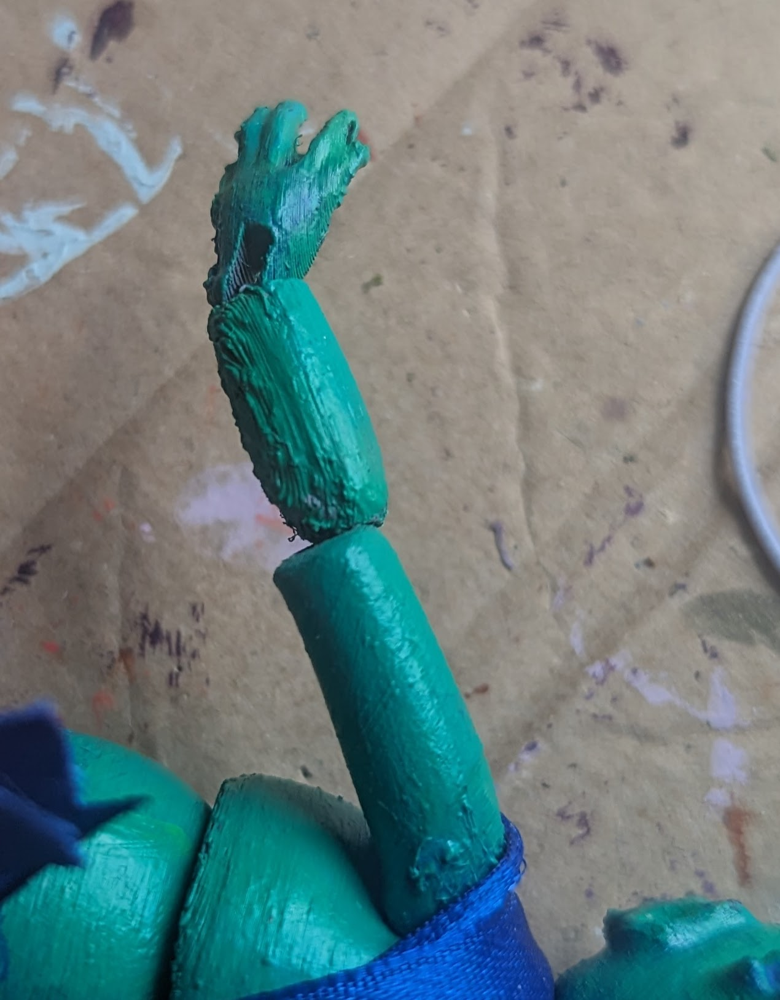
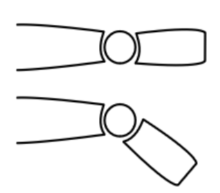

So what's the big deal with arms anyway? I though ball joints were the gold standard for articulation?
Well, yes, but a single ball joint can only do so much. The socket it's in limits its range, and there's only so much it can do without popping out and looking strange.
This is a problem I saw most clearly when I made a mistake with my first mermaid's arms.
It looks weird, yes, but even freed from a socket, the forearm still can't move that much. This is where double-jointing comes in.
The most basic description of a ball joint is that you have 1. a ball and 2. a socket. Thys, the ideal articulation is a perfect sphere with a perfect socket that can rotate all the way around it. This isn't possible with a strung joint, but keep it in mind
The way I've been making joints so far is that one section of limb has a ball and the end, and the matching one has a socket. This naturally limits the rotation because no limb is naturally a perfect sphere.
So... What if we did put a sphere in there? And made each limb end in a socket? That's the principle of double ball joints.
